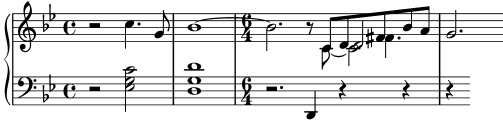

| [ << 出力を調整する ] | [Top][Contents][Index] | [ テンプレート >> ] |
[ < force-hshift プロパティ ] | [ Up: オブジェクトの衝突 ] | [ 更なる調整 > ] |
5.6.3 実際の音楽からの例
調整についてのセクションを、望みの出力を作り出すためにいくつかの調整を必要とするトリッキーな例を処理するときにとられるステップを示すことで締めくくります。この例は、記譜法についての普通ではない問題を解決するための記譜法リファレンスの使い方を示すために慎重に選ばれたものです。この例は一般的な譜刻プロセスを代表するものではありません。ですから、この例の複雑さでやる気を失わないでください！幸いなことに、このように複雑な問題は非常に稀です！
この例は Chopin の Première Ballade, Op. 23 の第 6 - 9 小節からとりました。序盤の Lento から Moderato へと移調する部分です。まず最初に望んでいる出力挙げますが、例があまりにも複雑になり過ぎないように強弱記号、運指法記号、ペダル記号は省きました。
![[image of music]](../b1/lily-2d57ce20.png)
まず、第 3 小節の右手パートには 4 つのボイスが必要であることに注目します。それぞれのボイスは、連桁でつながれた 5 つの 8 分音符、タイで結ばれた C、半音符の D (これは 8 分音符の D とマージされています)、付点 4 分音符の F シャープ (これも同じピッチの 8 分音符とマージされています) です。他の部分はすべて単一のボイスなので、最も容易な方法は 4 つのボイスを必要になったときに一時的に導入する方法です。一時的に多声にする方法を忘れてしまったのならば、私はボイスを聴いている と ボイスを明示的にインスタンス化する を参照してください。 ここでは、多声パッセージに明示的にインスタンス化されたボイスを使うことにします。なぜなら、すべてのボイスが明示的にインスタンス化されている方が、LilyPond はうまく衝突を回避できるからです。
音符を 2 つの変数として入力し、譜構造を Score ブロックの中でセットアップすることから始めて、それで LilyPond がデフォルトでどのような出力を作り出すのか見てみましょう:
rhMusic = \relative { \new Voice { r2 c''4. g8 | bes1~ | \time 6/4 bes2. r8 % 4 つのボイスの多声セクションの開始 << { c,8 d fis bes a } % メイン ボイスの続き \new Voice { \voiceTwo c,8~ 2 } \new Voice { \voiceThree s8 d2 } \new Voice { \voiceFour s4 fis4. } >> | g2. % メイン ボイスの続き } } lhMusic = \relative { r2 <c' g ees>2 | <d g, d>1 | r2. d,,4 r4 r | r4 } \score { \new PianoStaff << \new Staff = "RH" << \key g \minor \rhMusic >> \new Staff = "LH" << \key g \minor \clef "bass" \lhMusic >> >> }
すべての音符は間違っていません。しかしながら、見た目は満足とは程遠いものです。タイは移調する拍子記号と衝突していて、第 3 小節の連桁の付け方は間違っていて、音符はマージされておらず、いくつかの記譜要素は欠けています。簡単なものから片付けていきましょう。連桁の付け方は手動で連桁を挿入することで修正でき、左手パートのスラーと右手パートのフレージング スラーは簡単に追加できます – なぜなら、これらはすべてチュートリアルでカバーされているからです。これらの修正を加えると、以下のようになります:
rhMusic = \relative { \new Voice { r2 c''4.\( g8 | bes1~ | \time 6/4 bes2. r8 % 4 つのボイスの多声セクションの開始 << { c,8 d fis bes a } % メイン ボイスの続き \new Voice { \voiceTwo c,8~ 2 } \new Voice { \voiceThree s8 d2 } \new Voice { \voiceFour s4 fis4. } >> | g2.\) % メイン ボイスの続き } } lhMusic = \relative { r2 <c' g ees>2( | <d g, d>1) | r2. d,,4 r4 r | r4 } \score { \new PianoStaff << \new Staff = "RH" << \key g \minor \rhMusic >> \new Staff = "LH" << \key g \minor \clef "bass" \lhMusic >> >> }![[image of music]](../42/lily-58ae46de.png)
第 1 小節は正しくなりました。第 2 小節にはアルペジオが含まれていて、2 重の小節線で終わります。この学習マニュアルではこれらのことは言及されてこなかったのに、どうやってやればいいのでしょうか？ここで、記譜法リファレンスに移行する必要があります。索引で ‘arpeggio’ と ‘bar line’ を探せばすぐに、アルペジオは
\arpeggio を和音の後に付け加えることによって作り出され、2 重小節線は \bar "||" コマンドによって作り出されることがわかります。それは簡単にできます。次に、タイと拍子記号の衝突を修正する必要があります。これはタイを上に移動させる方法が最善です。オブジェクトの移動については以前に オブジェクトを移動させる でカバーしました。そこでは、譜との相対位置で配置されるオブジェクトは、そのオブジェクトの staff-position プロパティをオーバライドすることによって、移動させることができると述べられています。このプロパティは譜スペースの半分を単位として、譜の中央線からの距離で指定されます。ですから、以下の以下のオーバライドをタイで結ばれる最初の音符の前に置けば、タイは中央線から 3.5 半譜スペースだけ上の位置に移動させられます:
\once \override Tie.staff-position = #3.5
これで第 2 小節の修正も完了で、以下のようになります:
rhMusic = \relative { \new Voice { r2 c''4.\( g8 | \once \override Tie.staff-position = #3.5 bes1~ | \bar "||" \time 6/4 bes2. r8 % 4 つのボイスの多声セクションの開始 << { c,8 d fis bes a } % メイン ボイスの続き \new Voice { \voiceTwo c,8~ 2 } \new Voice { \voiceThree s8 d2 } \new Voice { \voiceFour s4 fis4. } >> | g2.\) % メイン ボイスの続き } } lhMusic = \relative { r2 <c' g ees>2( | <d g, d>1)\arpeggio | r2. d,,4 r4 r | r4 } \score { \new PianoStaff << \new Staff = "RH" << \key g \minor \rhMusic >> \new Staff = "LH" << \key g \minor \clef "bass" \lhMusic >> >> }![[image of music]](../cb/lily-580a919b.png)
第 3 小節 – Moderato セクションの開始部分 – に取り掛かります。チュートリアルで \tempo コマンドを使ってテンポ表示を付け加える方法を示しましたので、‘Moderato’ を付け加えることは容易です。しかし、異なるボイスの中にある音符をマージするにはどうするのでしょうか？ここで、助けを求めて記譜法リファレンスに移行する必要があります。記譜法リファレンスで “merge” を探せばすぐに、Collision resolution で符頭や付点の付き方が異なる音符をマージするためのコマンドにたどり着きます。今回の例では、多声部セクションで両方のタイプの音符をマージする
(異なる符頭を持つ音符のマージと、付点の付き方が異なる音符のマージ)
必要があるので、記譜法リファレンスで見つけた情報を使って、以下のコマンド:
\mergeDifferentlyHeadedOn \mergeDifferentlyDottedOn
を多声部セクションの開始点に置き、以下のコマンド:
\mergeDifferentlyHeadedOff \mergeDifferentlyDottedOff
をセクションの終了点に置きます。これで、例は以下のようになります:
![[image of music]](../a4/lily-b3f1d0a3.png)
オーバライドは 2 つの F シャープの音符をマージしましたが、2 つの D をマージしませんでした。なぜマージしなかったのでしょうか？その答えは記譜法リファレンスの同じセクションにあります
– マージされる音符は反対向きの符幹を持っていなくてはならず、同じ音符列に 3 つ目の音符がある場合は 2 つの音符をマージさせることはできません。今回の例では、2 つの D は両方とも上向きの符幹を持っていて、3 つ目の音符 – C – が存在します。我々は \stemDown を用いて符幹の向きを変更する方法を知っていて、記譜法リファレンスも C を移動させる方法について述べています –
\shift コマンドの 1 つを用いてシフトを行います。しかし、どのシフトを行えばよいのでしょうか？C はシフト off のボイス 2 の中にあり、2 つの D はボイス 1 とボイス 3 –
それぞれ、シフト off とシフト on – の中にあります。ですから、C が 2 つの D と衝突するのを避けるために、\shiftOnn を用いて C を更にシフトさせる必要があります。これらの変更を加えると、以下のようになります:
rhMusic = \relative { \new Voice { r2 c''4.\( g8 | \once \override Tie.staff-position = #3.5 bes1~ | \bar "||" \time 6/4 bes2.\tempo "Moderato" r8 \mergeDifferentlyHeadedOn \mergeDifferentlyDottedOn % 4 つのボイスの多声セクションの開始 << { c,8 d fis bes a } % メイン ボイスの続き \new Voice { \voiceTwo % c2 をメインの音符列から外したため、 % マージが機能します c,8~ \shiftOnn c2 } \new Voice { \voiceThree % マージさせるために d2 の符幹を下向きにする必要があります s8 \stemDown d2 } \new Voice { \voiceFour s4 fis4. } >> | \mergeDifferentlyHeadedOff \mergeDifferentlyDottedOff g2.\) % メイン ボイスの続き } } lhMusic = \relative { r2 <c' g ees>2( | <d g, d>1)\arpeggio | r2. d,,4 r4 r | r4 } \score { \new PianoStaff << \new Staff = "RH" << \key g \minor \rhMusic >> \new Staff = "LH" << \key g \minor \clef "bass" \lhMusic >> >> }![[image of music]](../a8/lily-72ddd189.png)
もうちょっとです。残っている問題は 2 つだけです:
マージされた D の下向きの符幹はあるべきではなく、C は D の右側に配置した方が良いということです。以前に行った調整からこれらを行う方法を両方とも知っています:
符幹を透明にして、force-hshift プロパティを用いて C を移動させます。ここで、最終結果を示します:
rhMusic = \relative { \new Voice { r2 c''4.\( g8 | \once \override Tie.staff-position = #3.5 bes1~ | \bar "||" \time 6/4 bes2.\tempo "Moderato" r8 \mergeDifferentlyHeadedOn \mergeDifferentlyDottedOn % 4 つのボイスの多声セクションの開始 << { c,8 d fis bes a } % メイン ボイスの続き \new Voice { \voiceTwo c,8~ % マージされる音符の右にある c2 を再配置します \once \override NoteColumn.force-hshift = #1.0 % c2 をメインの音符列から外したため、マージが機能します \shiftOnn c2 } \new Voice { \voiceThree s8 % マージさせるために d2 の符幹を下向きにする必要があります \stemDown % d2 の符幹を不可視にします \tweak Stem.transparent ##t d2 } \new Voice { \voiceFour s4 fis4. } >> | \mergeDifferentlyHeadedOff \mergeDifferentlyDottedOff g2.\) % メイン ボイスの続き } } lhMusic = \relative { r2 <c' g ees>2( | <d g, d>1)\arpeggio | r2. d,,4 r4 r | r4 } \score { \new PianoStaff << \new Staff = "RH" << \key g \minor \rhMusic >> \new Staff = "LH" << \key g \minor \clef "bass" \lhMusic >> >> }![[image of music]](../a1/lily-9d79bf90.png)
| [ << 出力を調整する ] | [Top][Contents][Index] | [ テンプレート >> ] |
[ < force-hshift プロパティ ] | [ Up: オブジェクトの衝突 ] | [ 更なる調整 > ] |